Third Example: Respiratory Binning for Motion-Resolved Cardiac MRI using Superior-Inferior (SI) Projections¶
The present respiratory binning procedure is implemented in the script lineMask_resp_fromSI_script.m. It returns a list of masks (one mask per bin) as a binary array of size [nBin, nLines] where nLines is the total number of acquired lines in the sequence.
Each mask corresponds to a respiratory phase extracted from the superior inferior (SI) projections acquired as the first line of each shot of a 3D-radial free running sequence [1].
In order to run the scripts, the SI’s must be prepared in an array named SI of size [nCh, N, nShot] where nCh is the number of channels in the raw data, N is the number of points per acquired line, and nShot is the total number of shots acquired during the sequence. We describe here each section of the script.
Steps for Respiratory Binning using SI projections:¶
Initialization
Here we set some parameters to help the program to recognize correct sizes and to inform the rest of the procedure. Enter the requested parameters as described more in detail below. You can then run the section.
%% Initialization filter_type = 'lowPass'; % 'lowPass' for respiratory binning nMask = 4; maskWidth = 1; % a with of 1 expresses no overlap. nSignal_to_select = 1; % 1 manually, untrended, % selected signal for resp. % binning signal_exploration_level = 'medium'; % 'leight' or 'medium' % or 'heavy' nCh = 20; N = 384; nSeg = 22; nShot = 3870; nLine = nSeg*nShot; nPt = N*nLine;
filter_type must be set to lowPass for respiratory binning.
nMask is the number of masks (or bins) that we want in the output.
maskWidth expresses how much the bins can overlap between neighbors. A value of 1 expresses no overlap. A value of 1.2 expresses 20% overlap.
signal_exploration_level is irrelevant for respiratory binning. It is needed for cardiac binning.
nCh is the number of channels in the raw data.
N is the number of points per acquired lines.
nSeg is the number of segments per shot in the sequence.
nShot is the total number of acquired shots in the sequence.
Constructing root-mean-squared SI for display
This section requires no input. It is just evaluating the root-mean-squared SI’s for a display purpose. You can just run the section.
%% getting rmsSI from SI rmsSI = bmMriPhi_fromSI_rmsSI(SI, nCh, N, nShot);
Extracting one single Reference Signal for Respiratory Binning
The goal of this section is to extract a single reference physiological signal that will serve to perform the respiratory binning.
%% getting standart_reference_signal from SI [s_ref, ... t_ref, ... Fs_ref, ... nu_ref, ... imNav, ... ind_shot_min, ... ind_shot_max, ... ind_SI_min, ... ind_SI_max, ... s_reverse_flag ] =... bmMriPhi_fromSI_get_standart_reference_signal(rmsSI, ... nCh, ... N, ... nSeg, ... nShot);
Run the section and you will see a graphical interface appear. You should be able to recognize the respiratory pattern.
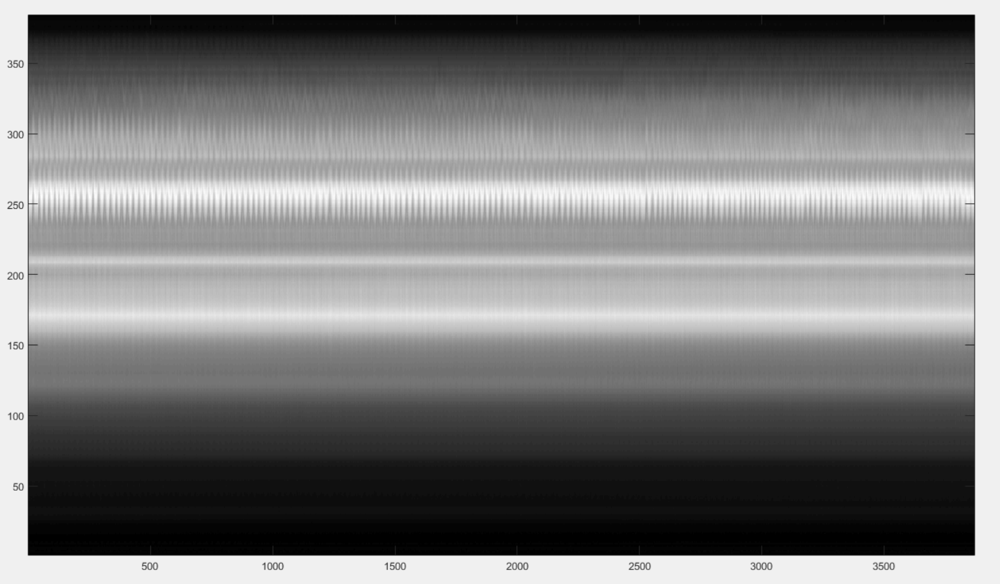You need now to define 3 pairs of lines by 6 clicks (and some possible re-adjustments) and then close the window to terminate the section.
The first pair of lines is to define a horizontal window.
Do s + Left Click to set the left end of the window.
Do s + Right Click to set the right end of the window.
The program is going to construct internally the even extension of the reference signal extracted by the present section. Observe next figure to select the left and right end of the horizontal window so that no pathology occurs, if possible (it is not critical but do your best).
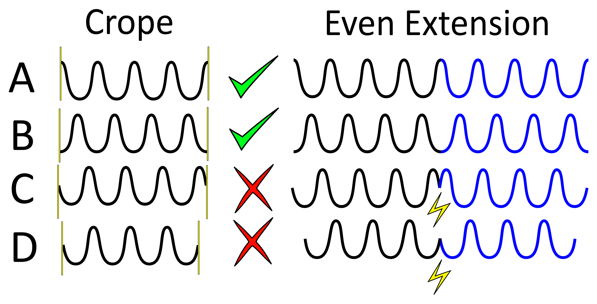In order to avoid pathologies in the even extension of the reference signal, we will select the left and right ends (yellow vertical bars) of the horizontal window either in two maxima of the respiratory pattern, or in two minima. You can zoom with the loop to click precisely.
Note that the left end of that horizontal window also serve to exclude the non-steady-state data lines.
Here is an example of the selection for the left and right ends of the horizontal window.
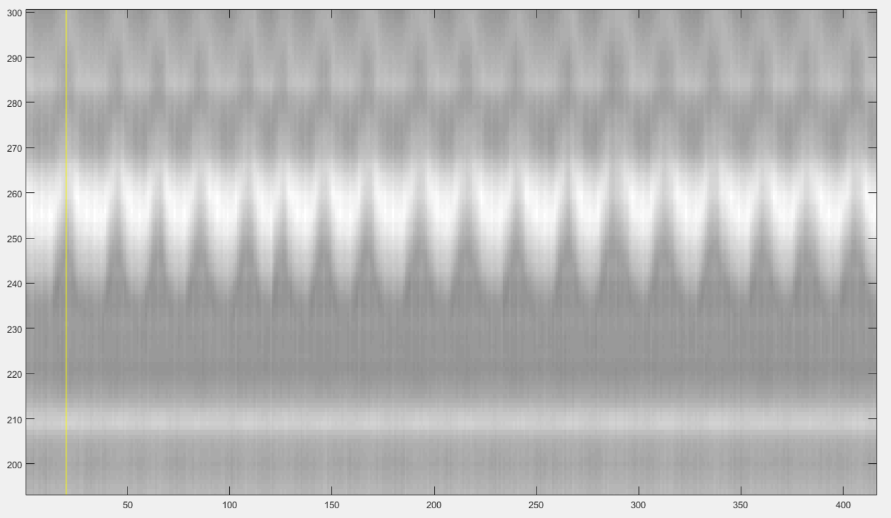 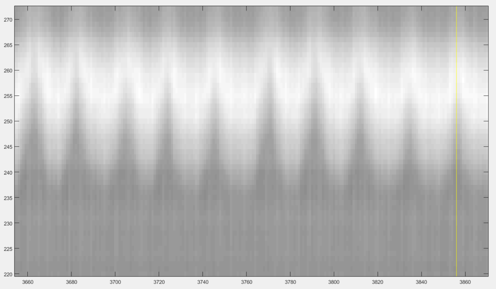You have now to define the lower and upper bound of the vertical window that contains some characteristic pattern of respiration. The best way to do it is to select some vertical window that seems to contain some respiratory pattern and then adjust it as described below. Make two clicks as follows:
Do x + Left Click to set the lower bound of the window.
Do x + Right Click to set the upper end of the window.
After the first click you shou see something like this:
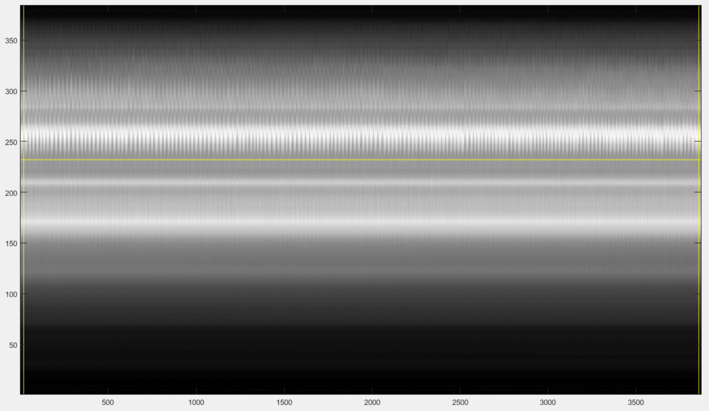And after the second click you shou see something like that:
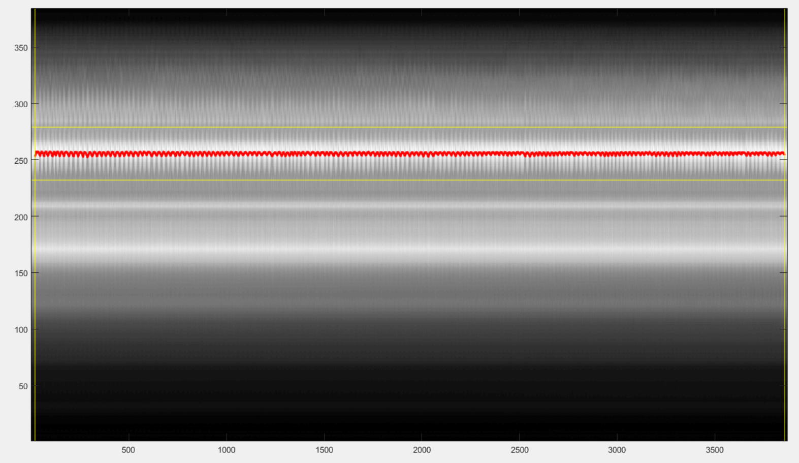The red line is the reference signal generated from the selected windows. It is a weighted average of the grey values in the vertical window. You have now to adjust it:
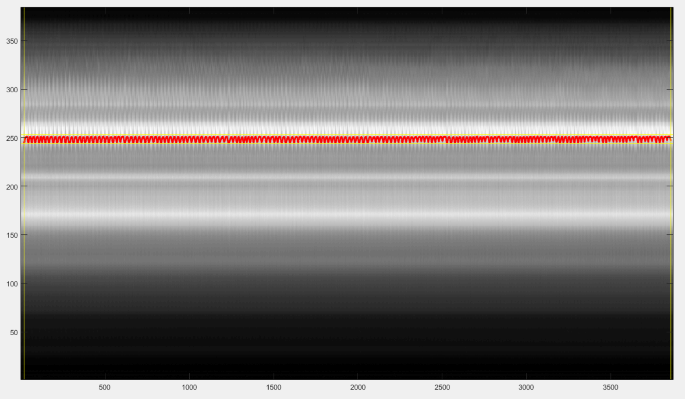press the up-arrow to shift the vertical window up,
press the down-arrow to shift the vertical window down,
press the ctrl+right-arrow to increase the width of vertical window,
press the ctrl+left-arrow to decrease the width of vertical window,
You can also
press ctrl+up-arrow to increase the displayed amplitude of the reference signal,
press ctrl+down-arrow to decrease the displayed amplitude of the reference signal.
press ctrl+R to flip up-down the reference signal.
After playing with those adjustments, you may be able to end up with something similar like the next figure.
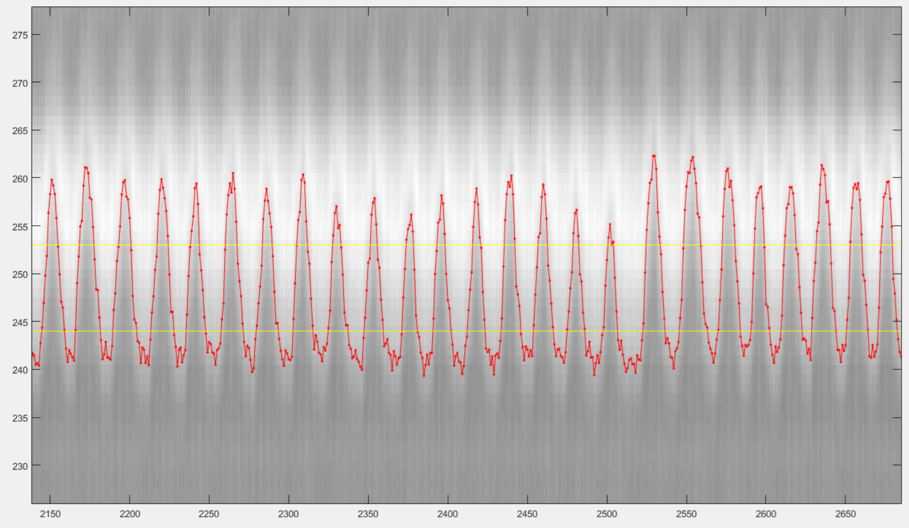Finally, chose a vertical window that will serve for display purpose only in the rest of the procedure.
press n + left-click to select the lower bound of the display window,
press n + right-click to select the upper bound of the display window.
After the first click you shou see something like this:
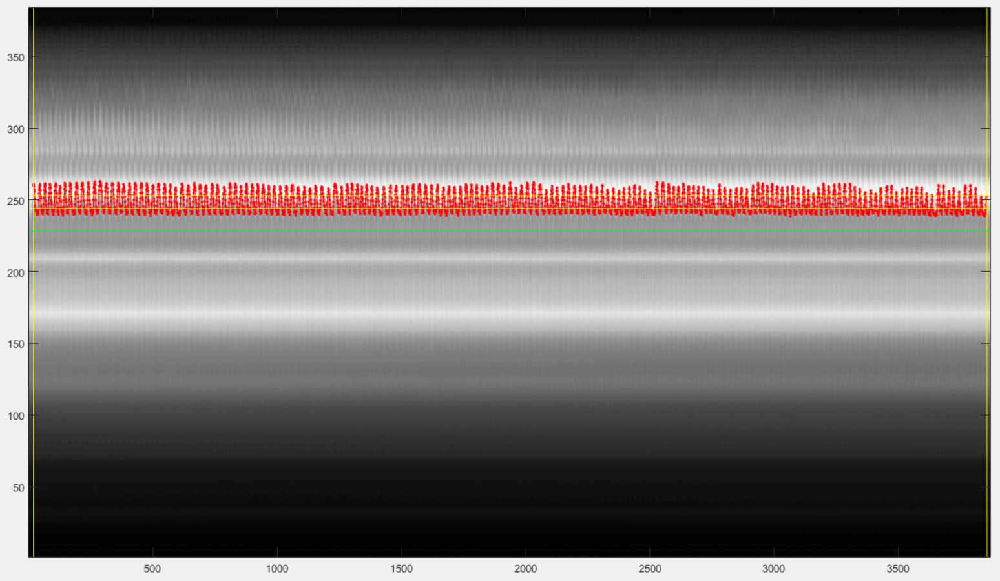And after the second click you shou see something like that:
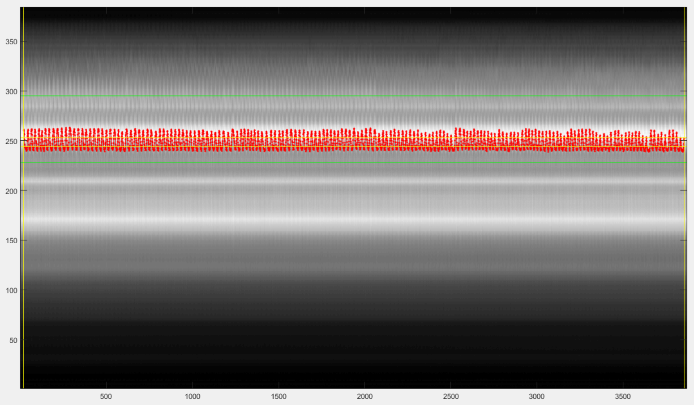You can now close the window and the chosen reference signal will automatically be saved.
Graphical Frequency Selector
We will now lowpass filter the reference signal. Run the following section.
%% graphical frequency selector [ s_ref_lowPass, ... s_ref_bandPass, ... lowPass_filter, ... bandPass_filter ] = ... bmMriPhi_graphical_frequency_selector(s_ref, ... t_ref, ... Fs_ref, ... nu_ref, ... imNav);
You should then see the graphical frequency selector appear. In the left panel is the frequency spectrum of the reference signal displayed, and the right panel is the reference signal displayed. On the left panel, in the upper line of buttons, press the more right button the stretch the frequency axis to the right until you see a similar picture like the following.
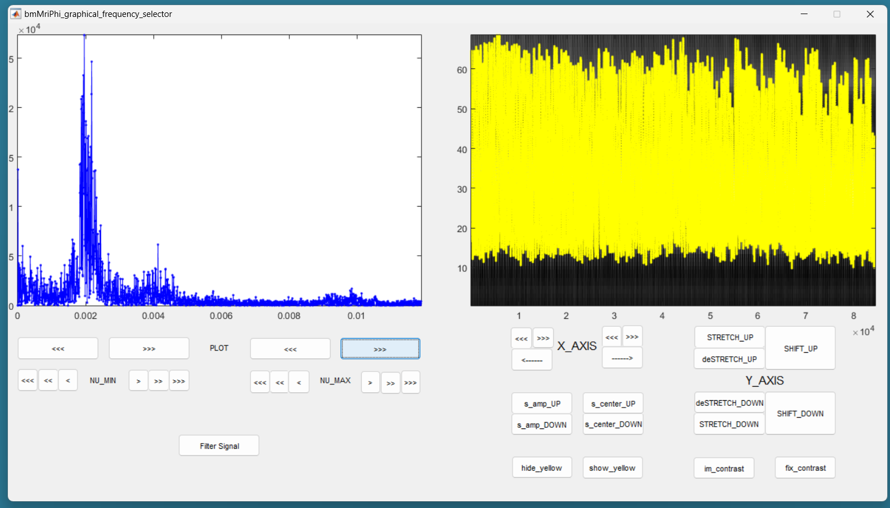Still on the left panel, in the lower line of buttons, on the right, press the “<<<” button to decrease the value of the maximum frequency of the filter. You may have to press many times until the effect appears on the displayed range of frequencies. You can also use the buttons “<<” and “<” to be more precise. Try to identify the peak around the base frequency of the respiratory signal, and create a lowpass filter that include that peak, like on the following figure.
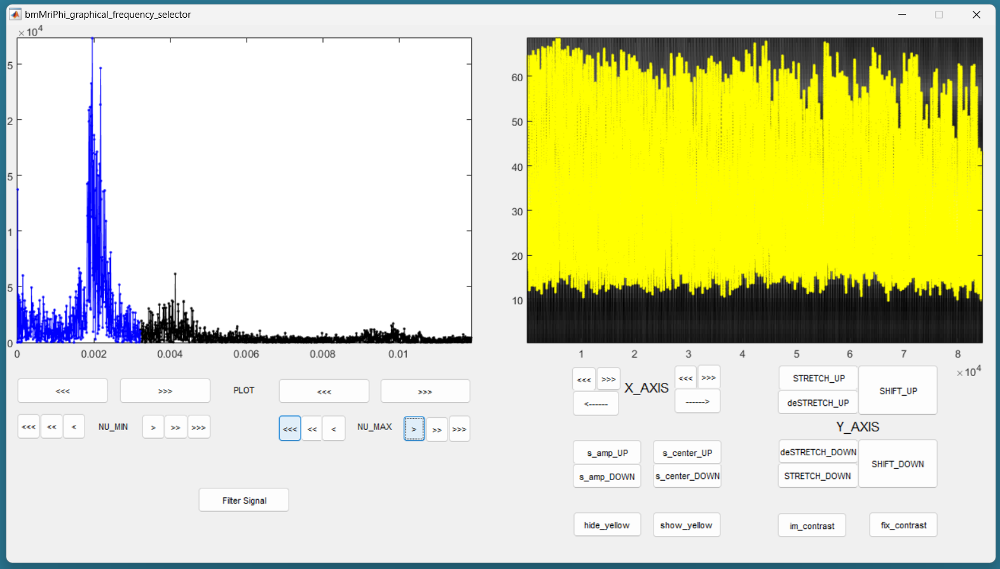For respiratory binning, keep the minimum frequency of the filter at 0. We do a lowpass filter (bandpass will be for cardiac binning).
Then press the button “Filter Signal”. The filtered signal appears then in blue on the right panel. You can press “Hide Yelow” to discard the reference signal.
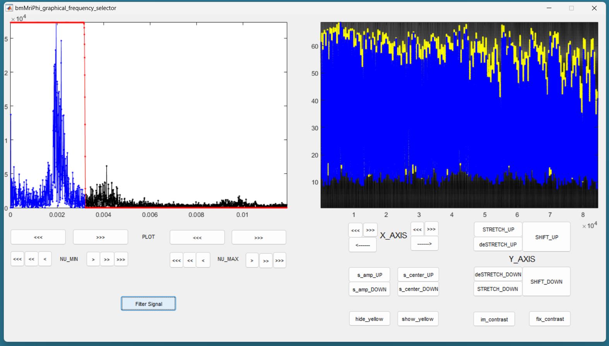You can stretch the time axis in both directions using the “<<<” and “>>>” buttons and navigate using the “—>” and “<—” buttons to inspect the filtered reference signal. Make sure that the signal looks like a sinusoid modulated in amplitude and frequency, but that no harmonic of the base frequency are expressed. There should ideally be no ringing in the filtered signal.
If needed, you can re-adjust the filter and press “Filter Signal” again, until the filtered signal looks like a modulated sinusoid. You can then close window and the filter will be saved.
Note that you can change the contrast of the background in the right panel with the imcontrast tool of Matlab by pressing the “imcontrast” button. But once you have changed the contrast, press the “fix contrast” button, else changes in contrast will be lost.
Reformatting the Filtered Signal
Just execute the following automatic section.
%% reformated_signal_ref check_image = rmsSI(ind_SI_min:ind_SI_max, :); reformated_signal_ref = ... bmMriPhi_fromSI_standartSignal_to_reformatedSignal(s_ref_lowPass, ... nSeg, ... nShot, ... ind_shot_min, ... ind_shot_max, ... check_image);
A figure appears then to show the filtered signal reformatted with the correct size. You can check on that figure that the filtered signal oscillate together with the background.
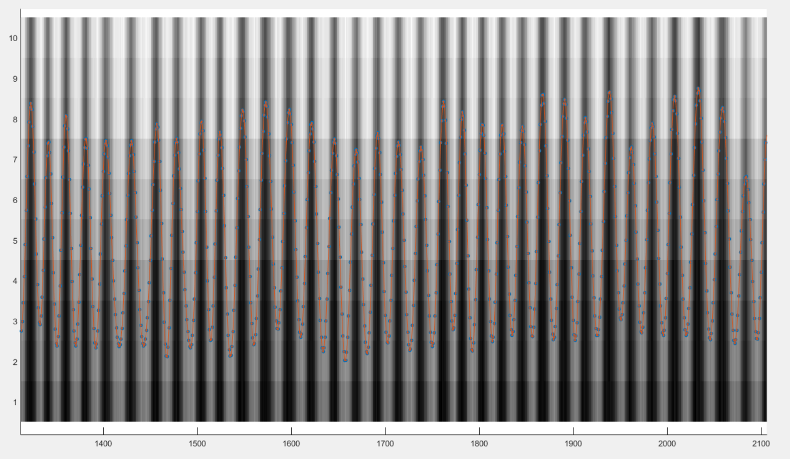You can close that figure and go to the next section.
Looking for Signal Candidates in Order to Create a Phase
This section is important for cardiac binning. It has no effect for the present respiratory binning. Just run it and go to the next.
%% extracting reformated_signal_list from SI if nSignal_to_select > 1 nSignal_to_select_minus_1 = nSignal_to_select - 1; reformated_signal_list = ... bmMriPhi_fromSI_collect_signal_list(filter_type, ... t_ref, ... nu_ref, ... SI, ... lowPass_filter, ... bandPass_filter, ... nCh, ... N, ... nSeg, ... nShot, ... nSignal_to_select_minus_1, ... signal_exploration_level, ... ind_shot_min, ... ind_shot_max, ... ind_SI_min, ... ind_SI_max, ... s_reverse_flag); else reformated_signal_list = []; end reformated_signal_list = cat(1, ... reformated_signal_ref, ... reformated_signal_list);
Selecting the Best Candidate Signals
This section is to include and exclude candidate signals for cardiac binning. In the present case of respiratory binning, we have only one candidate. You can run section.
%% exclude some of the signals manually final_signal_list = ... bmMriPhi_manually_exclude_signal_of_list( reformated_signal_list );
A figure appears to display our single candidate signal. Just close the figure.
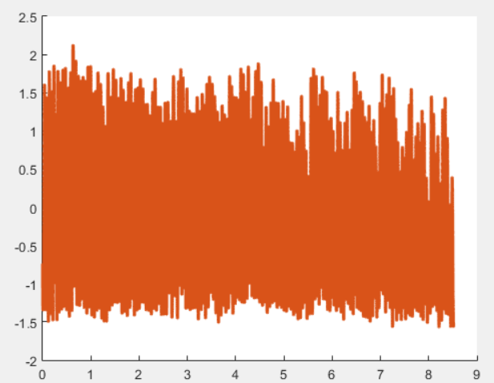Then accept the signal, and go to the next section.
Create the Masks
Here is the last section for respiratory binning. You can run it.
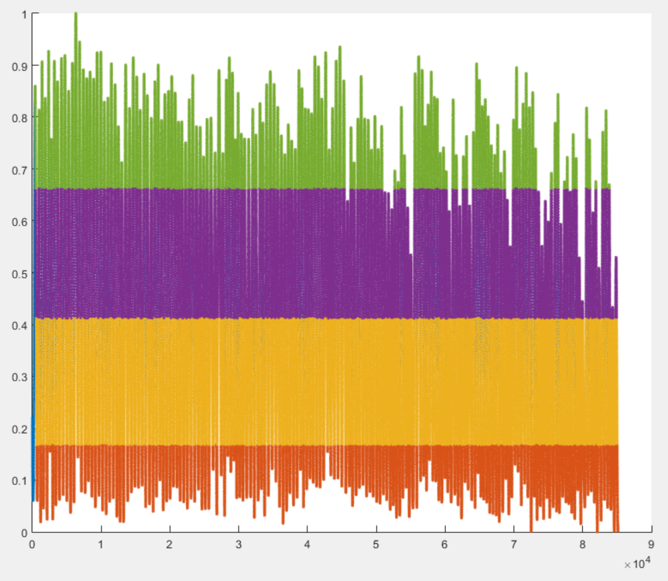%% mask_construction rMask = bmMriPhi_magnitude_to_mask(final_signal_list, ... nMask, ... nSeg, ... nShot, ... ind_shot_min, ... ind_shot_max);
The binning mask are displayed and stored in the variable rMask. Note that some first lines are excuded by the masks, in accordance with the choice of the horizontal window, which was chosen to exclude non-steady state acquired lines at the beginning of the procedure.
You can then save rMask on the disk for a future purpose.
{kind=link}
{kind=link}
{kind=link}
{kind=link}
{kind=link}
{kind=link}
{kind=link}
{kind=link}
{kind=link}
{kind=link}
{kind=link}
{kind=link}
{kind=link}
{kind=link}
{kind=link}
{kind=link}
{kind=link}
{kind=link}